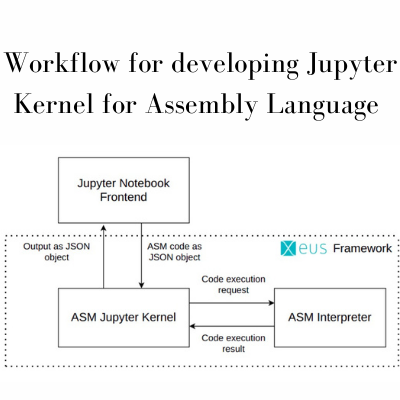
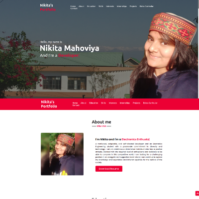
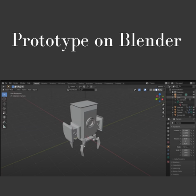
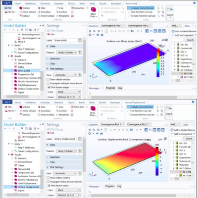
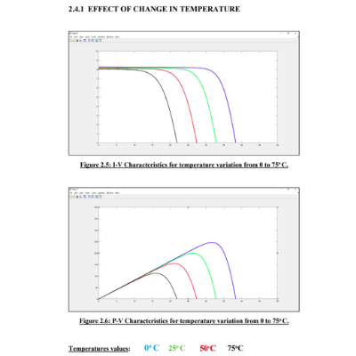
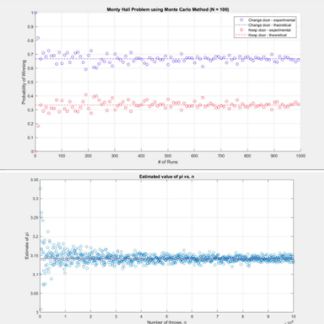
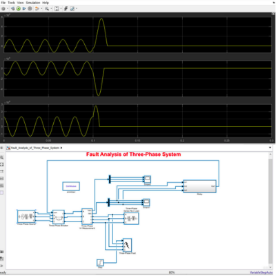
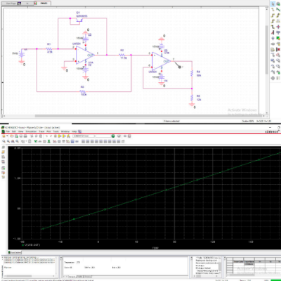

Developing Jupyter Kernel for Assembly Language
Duration
August 2021 - Present
Tech-Stack
Assembly Language, C++, CMake, Xeus Framework, Jupyter Notebook
In our previous semesters, we went through courses dealing with 8085 microprocessor and 8086 microcontroller which required coding over software like, GNUSim8085 and arm Keil respectively. While accessing these softwares we encountered certain problems listed below:
- Compatibility issues with the different operating systems
- License required which can be either institutional or bought.
- Software size producing memory issues.
These issues made us brainstorm in a direction that could increase the ease of user experience and you won’t be needing your system always for any sort of work as everything will be browser-based and you will be just a login away from your work.So our aim is to create a Jupyter Kernel for 8085 Microprocessor assembly language that can interpret assembly-level programs right from the Jupyter notebook.
Read More

My Portfolio
Tech-Stack
HTML, CSS, Javascript
This portfolio is my frontend project where I have listed about myself, my academics,skills, interests, internships, projects, extra-curruicular and last but not the least, my contact details
Read More

IoT based large area sanitization using UVC lights
Duration
August 2020 - June 2021
This project is a part of IIC National Innovation Contest 2020. The project is a teamwork of all the members and has secured a position at National Level. The proposed model is a chemical less, eco-friendly mass sanitizing system. It supports the latest guidelines given by the government concerning the mass sanitization of public places.
Ultraviolet (UV) light exposure is a direct antimicrobial approach, and its effectiveness against different strains of airborne viruses has long been established. Here we propose a cost effective IoT based robot that can sanitize the mass area using UV-C lights within 15 minutes. The most commonly employed type of UV-C light for germicidal applications is a low-pressure mercury-vapour arc lamp, emitting around 254 nm; When the light of 254nm is shined on bacteria, viruses, and other pathogens, it deactivates their DNA, destroying their ability to multiply and killing them. The bot has embedded the Arduino board integrated with PIR sensors to detect the Human presence and sanitize automatically in the absence of humans.
The Robot Quickly disinfects bacteria, viruses, and fungi on hard to reach surfaces and produce NO Ozone. The optimal germicidal wavelength of 254 nm is used that takes care of future/upcoming challenges. Not only Coronavirus, but it will also kill other germs and other contagious microorganisms. The extension of the product can be further implemented for eco-friendly, chemical less water disinfection.
Read More

Flexible Electronics
Duration
January 2020 - June 2020
Tech-Stack
MATLAB, Simulink, COMSOL
A group study project on Flexible Electronics under the guidance of Dr. Mahesh Angira sir (faculty, NIT HAMIRPUR) giving me an exposure to flex circuits, various manufacturing technologies, simulation of a thin film using COMSOL and simulation of PCB Antenna using MATLAB.
The motivation behind choosing this project was its extensive involvement of VLSI Technology. During our classroom session while studying about various junction technologies, processing of an IC, and various fabrication steps instilled in us to explore more about the domain and to do research for challenges and future trends.
Based on the current social-economic trends, we have outlined some of the more likely technological future needs and discussed the future potential exploits of film flexible electronics in various market sectors.
Read More

Study, Design and Implementation of Solar Cells
Duration
January 2020 - June 2020
Tech-Stack
MATLAB, Simulink
A group study project on optoelectronic devices under the guidance of Dr Gopal Rawat Sir (faculty, NIT HAMIRPUR) giving me an exposure of detailed mathematical modelling and simulation of three single diode equivalent models of solar cells.
This project work presents the single diode equivalent PV models which includes ideal single diode model, model with series resistance, and practical model with series and shunt resistance. We have introduced a simple method of mathematical modelling and simulation of current-voltage (I-V) characteristics and power-voltage (P-V) characteristics for these photovoltaic single diode models. The effect of variation in cell temperature, diode ideality factor, solar irradiation, and series and shunt resistances on I-V and P-V characteristics of the solar cells is also presented. Also a comparison of all the three models is shown and the conclusions are duly stated.
Read More

Reliability Analysis for Repairable Multistate Two-Unit Series Systems When Repair Time Can Be Neglected
Duration
January 2020 - June 2020
Tech-Stack
MATLAB
A group study project on reliability engineering under the guidance of Dr Chandra Shekhar Prasad Sir (faculty, NIT HAMIRPUR) giving an exposure of reliability analysis.
We first introduce an original model for two-unit series multistate Markov repairable systems, and then a new model is developed for two-unit series multistate repairable systems when repair time can be neglected. Each component in the two systems has three states: perfect operation, minor failure, and complete failure.
In the system, if the repair time for a completely failed component is no longer than a critical value, such that the system can return to work in a very short time, then the repair time for the completely failed component can be neglected with the whole system seen as operating during this time.
First, a model is developed for two-unit series multistate Markov repairable systems when repair time can be neglected. Secondly, the critical repair time is supposed not only to be a constant, but also a nonnegative random variable. Finally, some reliability indexes, such as availability, mean time to first failure, and failure frequency, are calculated for both the original and new systems.
Read More

Fault analysis in Three Phase System
Tech-Stack
HTML, CSS, Javascript
A group study project on Digital Electronics and Switching circuits under the guidance of Dr K.S. Pandey Sir (faculty, NIT HAMIRPUR) giving an exposure of Fault Analysis in Three Phase System.
The study of Short circuit is one of the basic power system analysis problems and is termed as fault analysis. When a fault occurs in a power system, bus voltages reduce and large current flows in the lines. This may cause damage to the various equipment. Hence faulty sections should be isolated from the rest of the network immediately on the occurrence of a fault. This can be achieved by providing relays and circuit breakers.
The results obtained from the short circuit study are used to find the relay settings and the circuit breaker ratings which are essential for power system protection.
Read More

Simulation of a digital thermometer using OrCAD as the Simulation tool
Tech-Stack
OrCAD
A group study project on Linear Integrated circuits under the guidance of Er Vinod Kumar Sir (faculty, NIT HAMIRPUR) giving an exposure of OrCAD and its actual implementation.
This project investigates and describes the concept of detection of temperature with digital techniques. The study examines the differences between the approach adopted by various instruments as per the need and requirements.
The topic “Simulation of a digital thermometer using OrCAD as the Simulation tool” was chosen as a relevance of various techniques which are emerging.
The detection of temperature could be done using a single component, but in our research, we differentiated all the elements which integrated into a single component and hence its comparison.
Read More